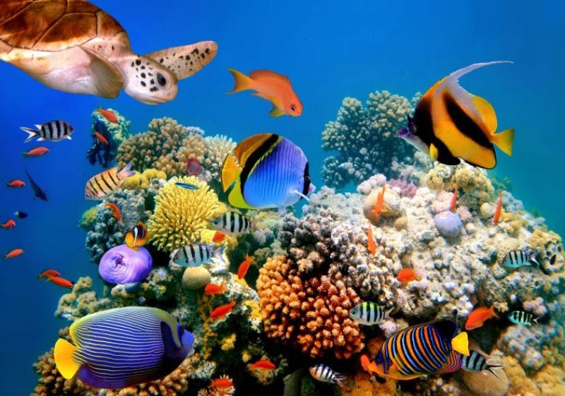

Após conseguir fugir do segundo quase acidente, Marlin começa a chorar achando que Nemo foi realmente sequestrado pela segunda vez, ou pego pela barracuda. Porém, Marlin lembra que Nemo teve a ideia de brincar de esconde-esconde no horário de ir para a escola e pode ter usado a brincadeira para ir sozinho. pois agora começa a se sentir envergonhado de ser o único peixinho que não nada sozinho até o Sr. Raia. Marlin e Dory nadam para a escola a procura de Nemo, entretanto está acontecendo a saída dos peixinhos.
1 - Marlin e Dory berram por Nemo na frente de todos para tentar encontra-lo.
2 - Esperam perto dos outros pais na esperança que Nemo apareça.